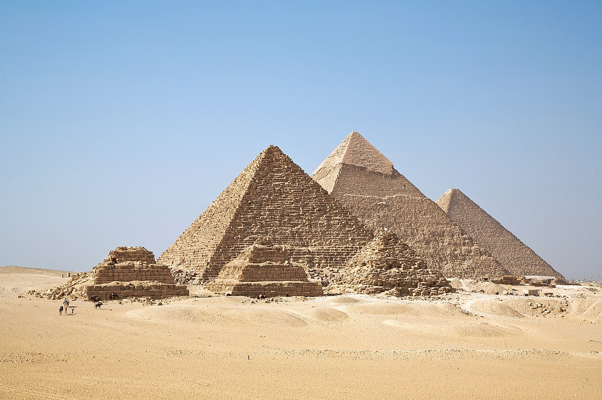

Geschiedenis van architectuur
Uit de jonge steentijd dateren stenen monumenten met een vermoedelijk rituele functie zoals hunebedden of dolmens, menhirs en steencirkels. Nog ouder zijn verzamelingen mammoetbotten die deel uitmaakten van ijstijdhutten.
De Egyptische oudheid liet grote monumenten na in de vorm van piramiden, mastaba's en tempels. Uit Mesopotamië zijn ook resten van steden en paleizen overgebleven.
De Oud-Griekse architectuur beslaat een periode van 3 millennia en een veelheid van stijlen. De Romeinse architectuur nam een aantal Griekse stijlelementen over maar introduceerde bogen en gewelven. Zij evolueerde verder in de vroegchristelijke en de Byzantijnse architectuur.
In de Middeleeuwen voltrekt zich een belangrijke evolutie van de romaanse architectuur naar de meer gesofisticeerde gotiek.
De Nieuwe Tijd erkent architecten als niet langer alleen ambachtslieden, maar ook en vooral als geleerden en kunstenaars. De algemene evolutie van de kunsten loopt parallel in de evolutie van de bouwkunst over renaissancearchitectuur, barok en rococo om met het classicisme in de Moderne Tijd te belanden.
Onder invloed van de romantiek ontstaat een belangstelling voor het verleden, in de architectuur vertaald door verschillende vormen van historicisme: het teruggrijpen naar bouwstijlen uit het verleden om er een eigentijdse interpretatie aan te geven. Dit is het tijdperk van de neo-stijlen zoals de neogotiek.
In de 20ste eeuw volgt de evolutie van de bouwstijlen de snelle veranderingen in de kunst en in de maatschappij; zo zijn jugendstil, futurisme en postmodernisme algemene kunststromingen, die echter ook hun uiting vonden in de architectuur. De evolutie wordt ook gevoed door de beschikbaarheid van nieuwe materialen als gietijzer, staal en beton, evenals nieuwe technologieën zoals lassen, elektrische verlichting, liften en digitale elektronica. Vanaf de jaren 1960 neemt het belang van ecologie en duurzaamheid toe.